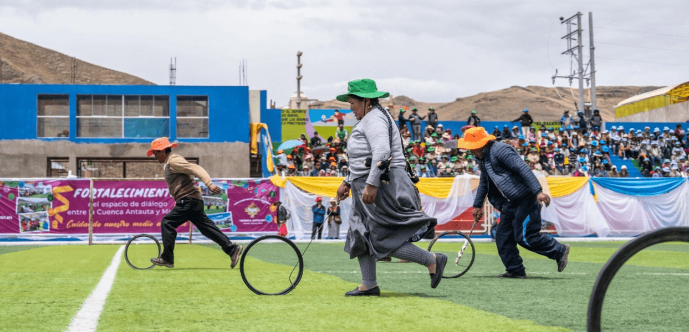
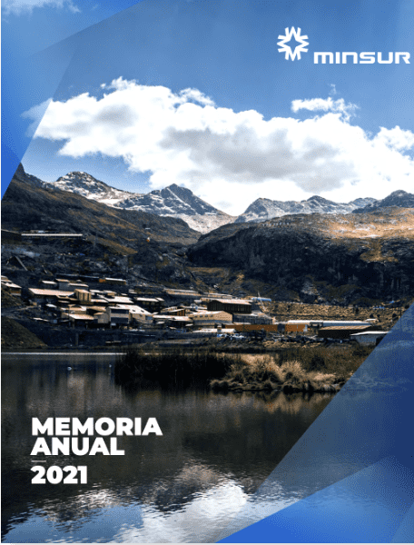

En el 2020 Minsur S.A. emprendió un amplio proceso de reflexión que nos llevó a definir nuestro propósito: “Mejoramos la vida transformando minerales en bienestar”. Este propósito coloca a las personas en el centro de nuestras decisiones y deriva en un cambio de diversos aspectos de nuestra estrategia empresarial.

En ese contexto, nació Ayni como un enfoque de relacionamiento y comunicación más humana que busca desarrollar vínculos más estrechos con las comunidades, a partir de la escucha, el involucramiento cultural y la participación ciudadana.
Así, generamos diálogos transformadores, espacios de convivencia y soluciones locales en aspectos que trascienden la agenda minera.
Este enfoque se ha implementado en Antauta y Ajoyani, en Puno, donde se ubica nuestra mina de estaño San Rafael.
Descargas
